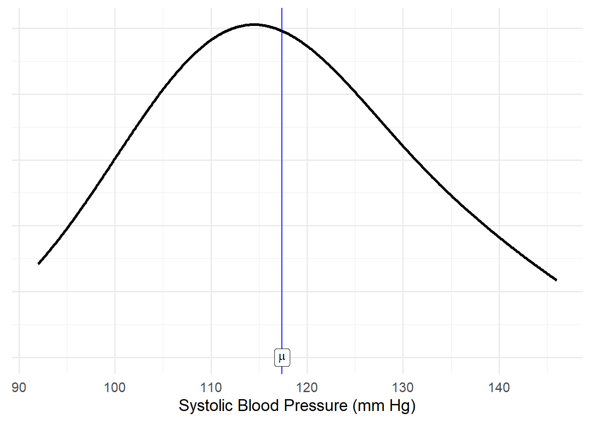
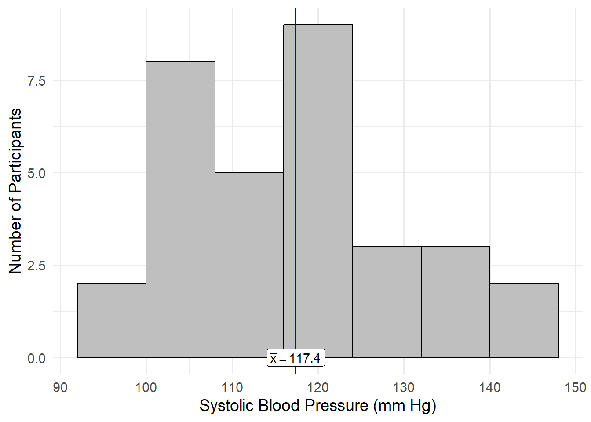
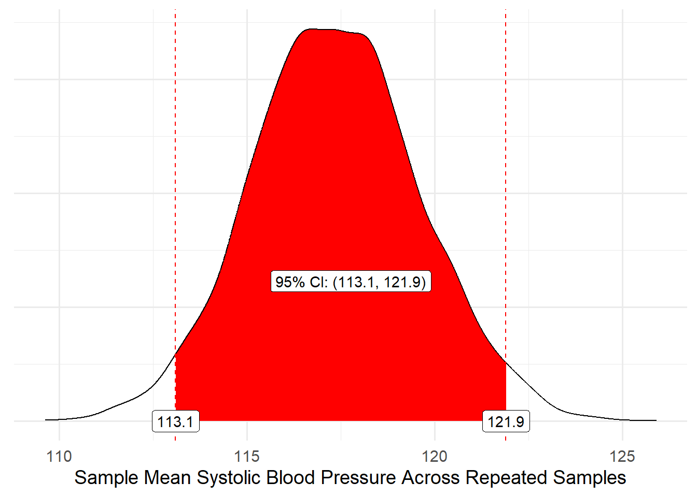
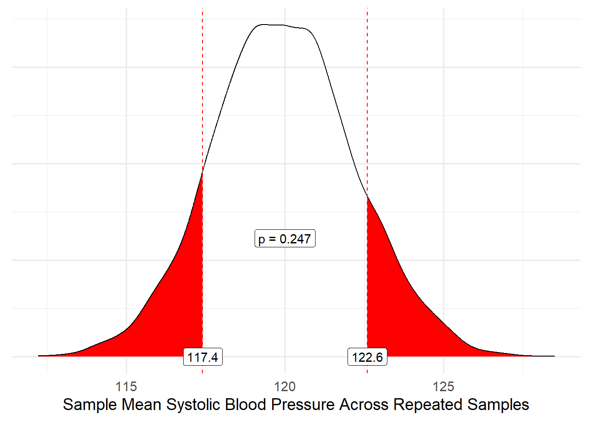

2 Distributional Quartet
Any good statistical analysis moves between four key distributions — what we refer to as the Distributional Quartet. While not always explicitly discussed, these distributions are always present in an analysis. Understanding their role is important to implementing and interpreting an analysis.
We begin by considering the following example from Rosner (2006).
Example 2.1 (Blood Pressure when Lying Down) Blood pressure is one metric for the health of your heart. A blood pressure reading includes two numbers — the systolic blood pressure (the “top number,” measures the amount of pressure in your arteries when your heart contracts) and the diastolic blood pressure (the “bottom number,” measures the amount of pressure in your arteries when your heart is between beats).
An individual does not have a single blood pressure reading; our blood pressure fluctuates as a result of activity as well as our position. In a study examining the impact of position on blood pressure, 32 participants had their blood pressure measured while lying down with their arms at their sides.
Stated simply, the discipline of statistics is about using data to say something about a process that characterizes a population. Our analysis, therefore, begins with the Distribution of the Population.
Distribution of the Population
The pattern of variability in values of a variable across individuals of the population. The shape of this distribution is governed by unknown parameters. While we generally do not know the shape of this distribution, we may occasionally posit a model for it.
We are interested in using the data from this study to characterize the systolic blood pressure of individuals when in this recumbent position, with their arm at their side. Of course, we are unable to assess the blood pressure of all individuals in the world. Therefore, we do not know what the distribution of systolic blood pressure measurements is for this population. However, we might posit a model for this distribution. Such models, which must account for the variability among the population, are studied in probability theory, which we consider in the next section. For now, it suffices to imagine the distribution of the population graphically; it is characterized by the unknown parameters (Figure 2.1).
The data we actually observe comes from the sample, and we will use this smaller group to say something about the underlying population. It is the distribution of sample which we are summarizing each time we construct a graphic.
Distribution of the Sample
The pattern of variability in values of a variable across individuals of the sample. This is typically summarized graphically and numerically.
Figure 2.2 summarizes the sample using a histogram. If our sample is collected well, then it should be representative of the population, meaning that the distribution of the sample should reflect the characteristics of the (unobserved) distribution of the population. The location, spread, and shape should all reflect what we might see within the population.

Examining the sample is critical to understanding the story in the data. We must remember, however, that the statistics we compute using our sample are dependent upon the data we observed. If we were to repeat the sampling process (collect new data to answer the same question), our statistics would change. Good inference requires us to acknowledge this sampling variability and incorporate it when making statements about the population.
Sampling Distribution
The pattern of variability in values of a statistic (or standardized statistic) across repeated samples of the same size from the population. This must be modeled in practice.
As we are generally unable to perform replicate studies, we model the sampling distribution using the data available (future chapters will discuss the various methods available for modeling this distribution). The model for the sampling distribution allows us to determine values of the parameter for which the data is consistent. That is, it allows us to compute a confidence interval to estimate a parameter of interest. For example, a 95% CI for the mean systolic blood pressure (mm Hg, when recumbent with arm at their side), based on our data available, is (113.1, 121.9); this is illustrated in Figure 2.3 alongside the model for the sampling distribution of the sample mean systolic blood pressure from which the CI was computed.

While statisticians generally have a preference toward estimation (and therefore reporting confidence intervals), scientists often have specific research questions they would like to address. When this is the case, the scientist may want to quantify the strength of evidence in the sample against some specified hypothesis. In order to determine how rare our data is, we must know what we should expect under the specified hypothesis.
Null Distribution
The sampling distribution of a statistic (or standardized “test” statistic) when the null hypothesis is true. This must be modeled in practice.
The null distribution effectively tells us what values of the statistic we would expect to see if the null hypothesis were true. If our observed statistic seems plausible according to the null distribution, then it follows that the null hypothesis is reasonable. If, on the other hand, our observed statistic is unexpected according to the null distribution, then we have evidence that the null hypothesis is false (and therefore that the alternative is true). That is, we are able to statistically discern the difference between our data and what we would have expected to see under the null hypothesis. Note that these are our only two potential conclusions. The strength of the evidence is quantified by the p-value. For example, suppose we are interested in using our data to test the following set of hypotheses:
\[H_0: \mu = 120 \qquad \text{vs.} \qquad H_1: \mu \neq 120,\]
where \(\mu\) represents the average systolic blood pressure of an individual when lying down.
That is, we are interested in determining if there is evidence that, on average, the systolic blood pressure (recumbent with arm at side) differs from 120 mm Hg. According to the data, it is reasonable (p = 0.247) that the average systolic blood pressure is 120 mm Hg. The computation of the p-value is illustrated in Figure 2.4 alongside the model for the null distribution for this particular hypothesis.

Our focus in this short review is not this specific analysis. The emphasis here is on the process — the use of the four distributions used in a statistical analysis. They allow us to take the sample and make inference on the underlying population. As we move forward in the course, we will study more sophisticated models. However, behind the scenes, the procedures are always bouncing between these four distributions in order to allow us to make inference.
Note
Note that we construct a model for the sampling distribution of a statistic or a model for the null distribution of a (standardized) statistic. All models are simplifications of complex processes; and, the validity of each model requires certain conditions be true about the data generating process.
Generally, we must make assumptions about the data generating process. Therefore, the reliability of these models, and consequently our analysis, depends on whether these assumptions are reasonable. We must always keep in mind that our analysis is subject to the assumptions we make.